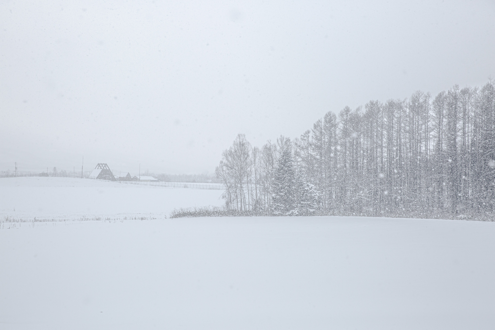
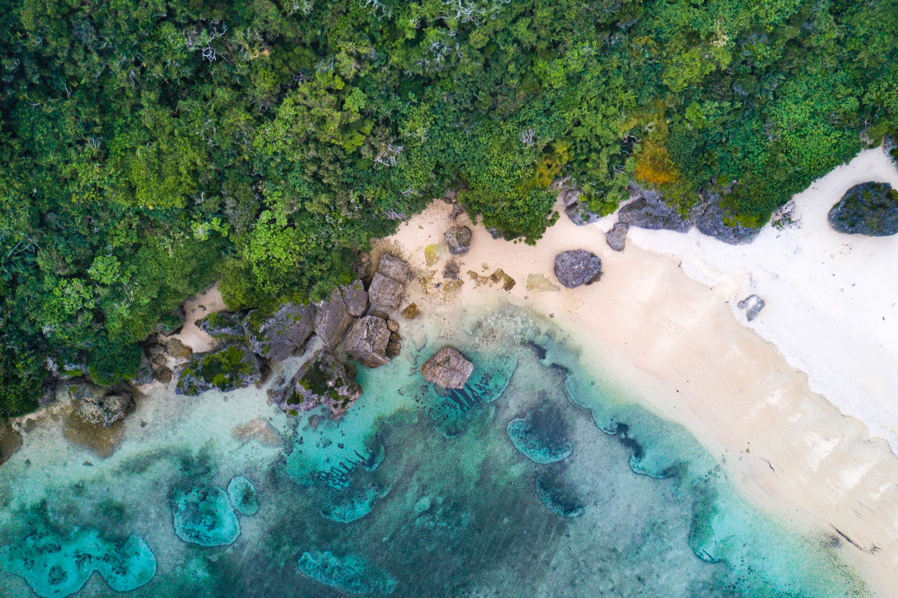
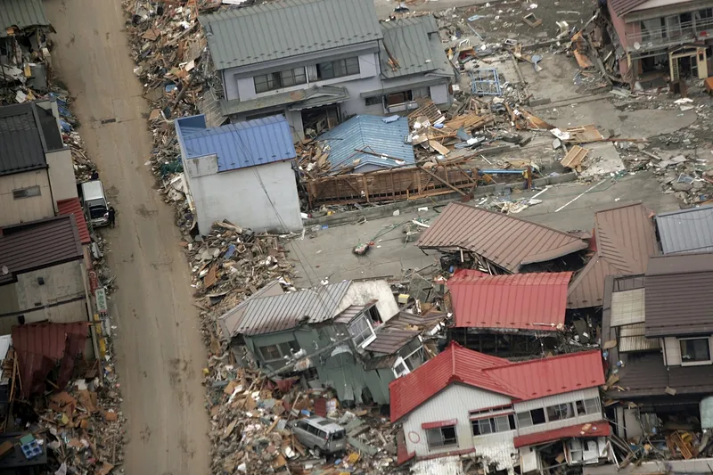

Het Japanse volk heeft een diepe genegenheid voor de schoonheid van het landschap. De oude Shinto-religie zegt dat natuurlijke kenmerken zoals bergen, watervallen en bossen hun eigen geest hebben, zoals zielen.
Het grootste deel van Japan bestaat uit platteland. Maar met meer dan 100 miljoen mensen die op zo'n kleine plek wonen, hebben dieren in het wild geleden.
Vervuiling wordt nu streng gecontroleerd, maar wegenbouw en andere menselijke activiteiten hebben natuurlijke habitats beschadigd. Ongeveer 136 soorten in Japan worden als bedreigd beschouwd.
De warme Tsushima-stroom stroomt vanuit het zuiden naar de Japanse Zee, waar het een koudere stroming uit het noorden ontmoet. Door de vermenging van wateren zijn de zeeën rond Japan zeer rijk aan vis en ander zeeleven.
Natuur en Milieubescherming
De Japanse archipel, uitgestrekt over bijna 3000 kilometer zee van noord naar zuid, heeft niet alleen megasteden zoals Tokio en Kyoto, maar heeft ook veel natuurlijke wonderen, variërend van het drijfijs in Hokkaido tot mangrovebossen in Okinawa.


Zo'n breed scala aan klimaatzones en natuurlijke omgeving maakt van Japan een thuis voor meer dan duizenden inheemse diersoorten. Dankzij de ligging aan de Pacifische Ring van Vuur heeft de geologische activiteit van Japan geleid tot prachtige bergen en vulkanen, adembenemende geologische spektakels en verbazingwekkende warmwaterbronnen. Japan is ook actief bezig met het beschermen van zijn milieu sinds de jaren zeventig en beschikt nu over enkele van 's werelds meest geavanceerde strategieën en technologieën om een ideaal evenwicht te vinden tussen ontwikkeling en milieubehoud. Er is strikte wet- en regelgeving met betrekking tot de ontwikkeling van natuurgebieden. Over het hele land zijn nationale parken en aangewezen beschermde gebieden opgezet. Andere soortgelijke inspanningen om van Japan een groenere plek te maken, zijn onder meer de ontwikkeling van elektrische auto's en auto's op waterstof, en het uitgebreide en strikte recyclingbeleid in Japan.
Natuurrampen
Ondanks het feit dat Japan 0,28% van het landoppervlak van de wereld bezette, wordt ongeveer 18,3% van de wereldwijde kostenramp in Japan besteed. Er is ook een grote kans op twee enorme aardbevingen in de komende 30 jaar en Mount Fuji kan zelfs samen met deze aardbevingen uitbarsten.
